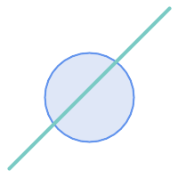
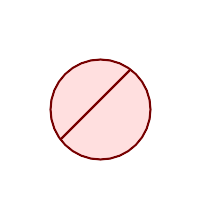
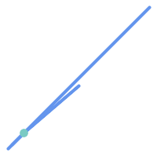
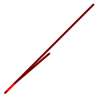

名前
ST_Split — ジオメトリを他のジオメトリで分割してできたジオメトリのコレクションを返します。
概要
geometry ST_Split(geometry input, geometry blade);
説明
この関数は（MULTI)POINT、(MULTI)LINESTRING、(MULTI)POLYGONの境界によるLINESTRINGの分割と、LINESTRINGによる(MULTI)POLYGONの分割に対応します。(MULTI)POLYGONを刃として使うとき、線要素 (境界)は入力の分割に使われます。結果ジオメトリは常にコレクションです。
この関数はST_Unionの逆のようなものです。返されるコレクションにST_Unionを与えると、理論的には元のジオメトリが得られます (丸め誤差のために確実に同じになるものではありません)。
![[注記]](../images/note.png) | |
入力と刃が数値の精度の問題でインタセクトしない場合には、入力が思ったように分割されない可能性があります。この状況を避けるには、先に、ST_Snapに小さい許容値を与えて、入力を刃にスナップする必要があるかも知れません。 |
Availability: 2.0.0 GEOSが必要です
Enhanced: 2.2.0 ライン分割をマルチライン、マルチポイントまたはポリゴンもしくはマルチポリゴンの境界で行えるようにしました。
Enhanced: 2.5.0 マルチラインによるポリゴンの分割に対応するようになりました。
例
ラインでポリゴンを分割します。
|
 分割前
|
 分割後
|
SELECT ST_AsText( ST_Split(
ST_Buffer(ST_GeomFromText('POINT(100 90)'), 50), -- circle
ST_MakeLine(ST_Point(10, 10),ST_Point(190, 190)) -- line
));
-- result --
GEOMETRYCOLLECTION(
POLYGON((150 90,149.039264020162 80.2454838991936,146.193976625564 70.8658283817455,..),
POLYGON(..))
)
マルチラインストリングをポイントで分割しますが、ポイントは確実にラインストリングの要素の上に存在しています。
|
 分割前
|
 分割後
|
SELECT ST_AsText(ST_Split(
'MULTILINESTRING((10 10, 190 191), (15 15, 30 30, 100 90))',
ST_Point(30,30))) As split;
split
------
GEOMETRYCOLLECTION(
LINESTRING(10 10,30 30),
LINESTRING(30 30,190 190),
LINESTRING(15 15,30 30),
LINESTRING(30 30,100 90)
)
ラインストリングをライン上にないポイントで分割します。ST_Snapを使ってラインをポイントにスナップして分割できるようにしています。
WITH data AS (SELECT
'LINESTRING(0 0, 100 100)'::geometry AS line,
'POINT(51 50)':: geometry AS point
)
SELECT ST_AsText( ST_Split( ST_Snap(line, point, 1), point)) AS snapped_split,
ST_AsText( ST_Split(line, point)) AS not_snapped_not_split
FROM data;
snapped_split | not_snapped_not_split
---------------------------------------------------------------------+---------------------------------------------
GEOMETRYCOLLECTION(LINESTRING(0 0,51 50),LINESTRING(51 50,100 100)) | GEOMETRYCOLLECTION(LINESTRING(0 0,100 100))